Esquisses de réalisations👇🏾
Mes expériences sont riches de parcours diversifié dans divers structures tand dans des établissements publics que des entreprises privées
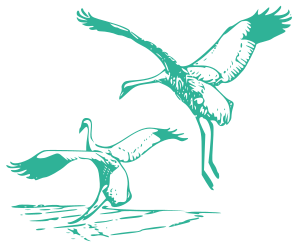

Recueillir, compiler les données sur la topographie d'un site et implémenter ces données dans un catalogue SIG | pour créer une carte topographie du site.
Carte topographique

Extraction des informations sur la topographie et la distribution des différent d'eaux (avec les ordres) dans le cadre d'un projet personnel pour le suivi des risques d'innodation.
Carte d'un réseau hydrographique
Réalisations
Le Géographe géomaticien, au cœur du développement durable

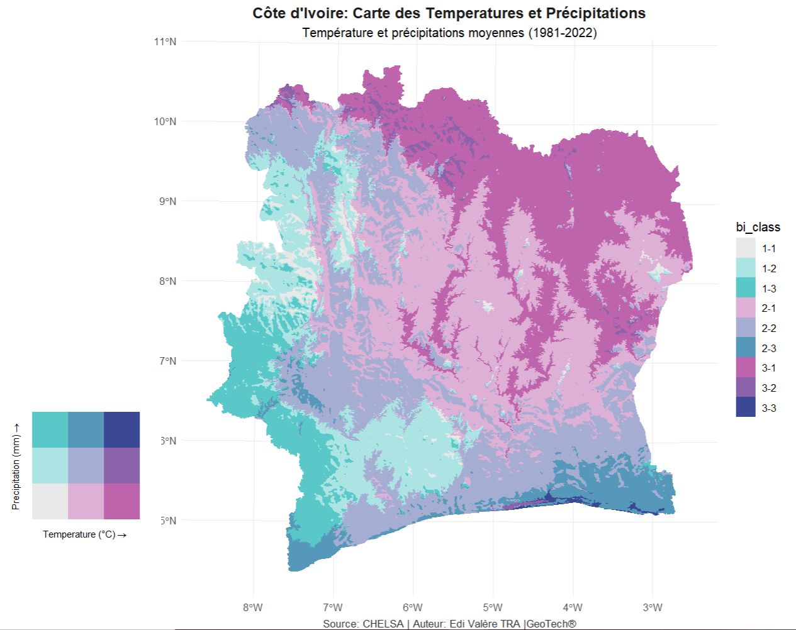
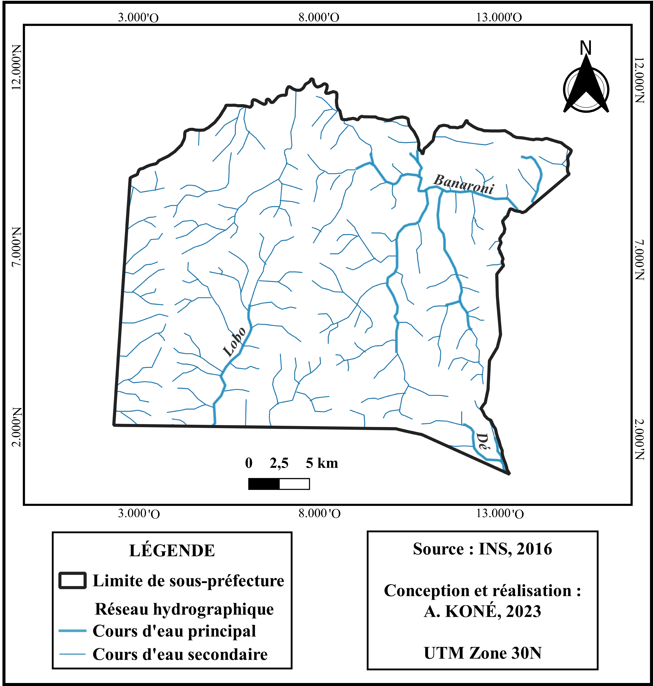
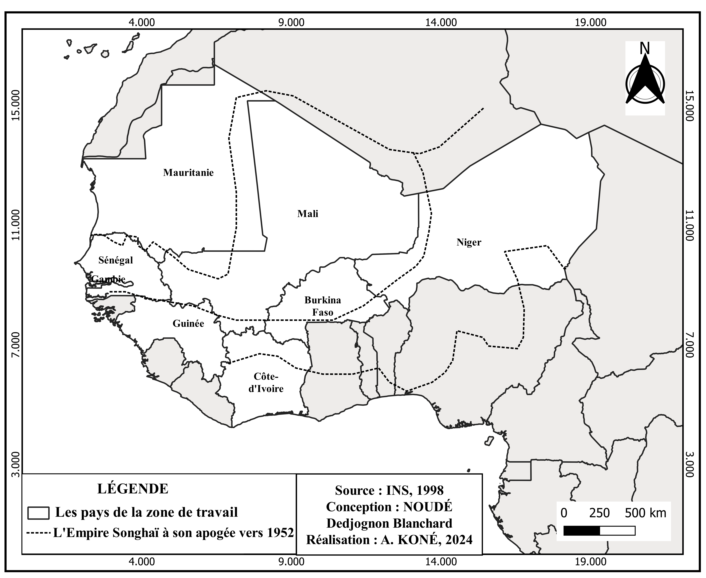
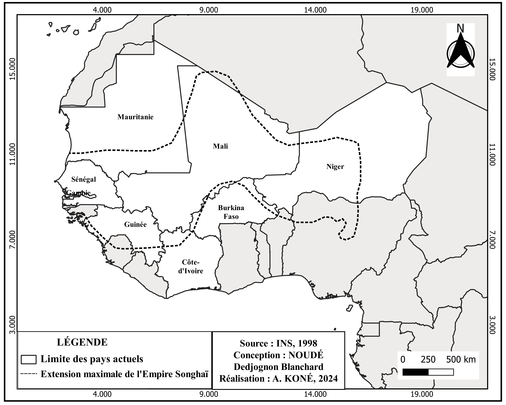
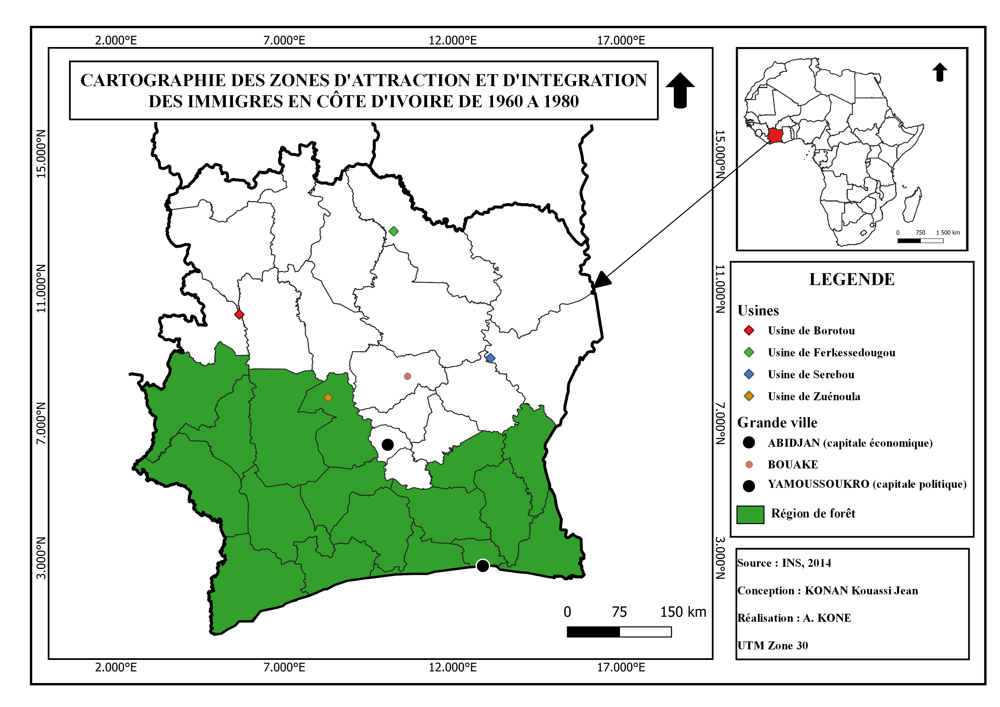

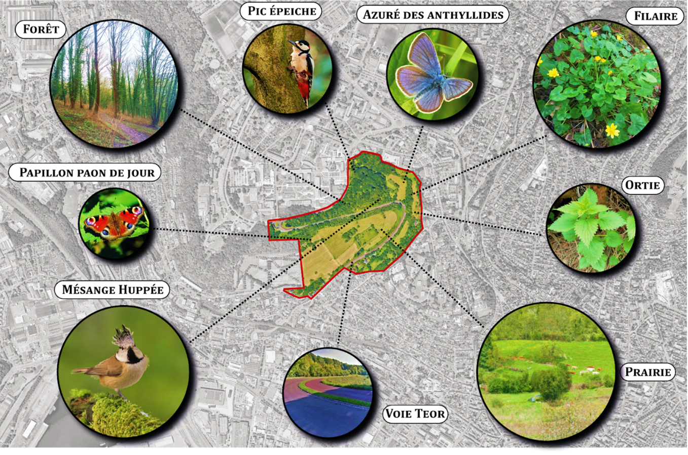
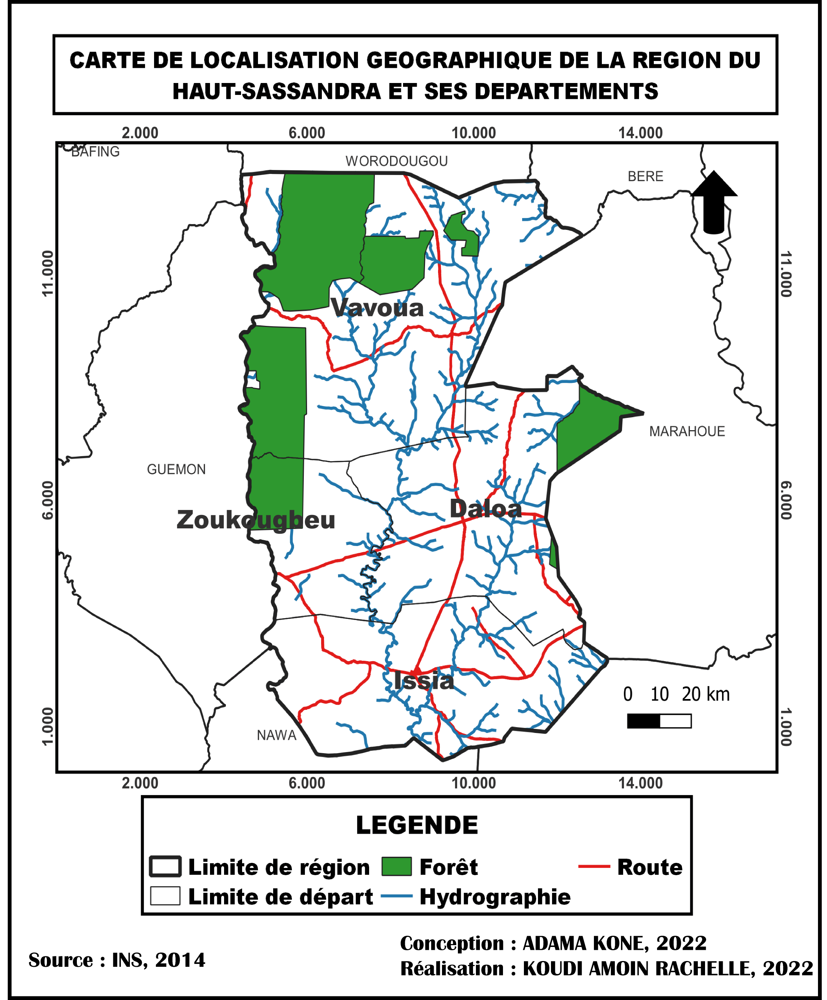
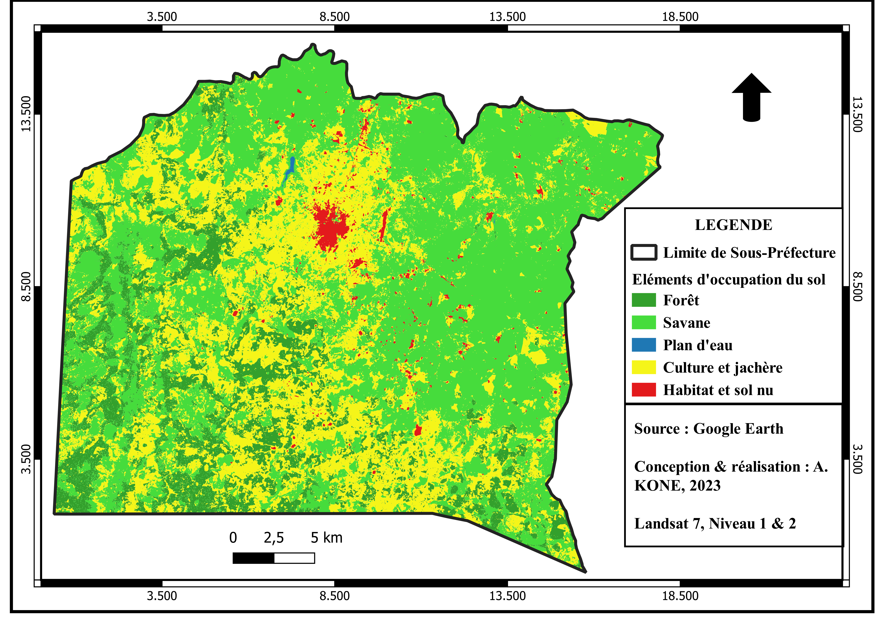
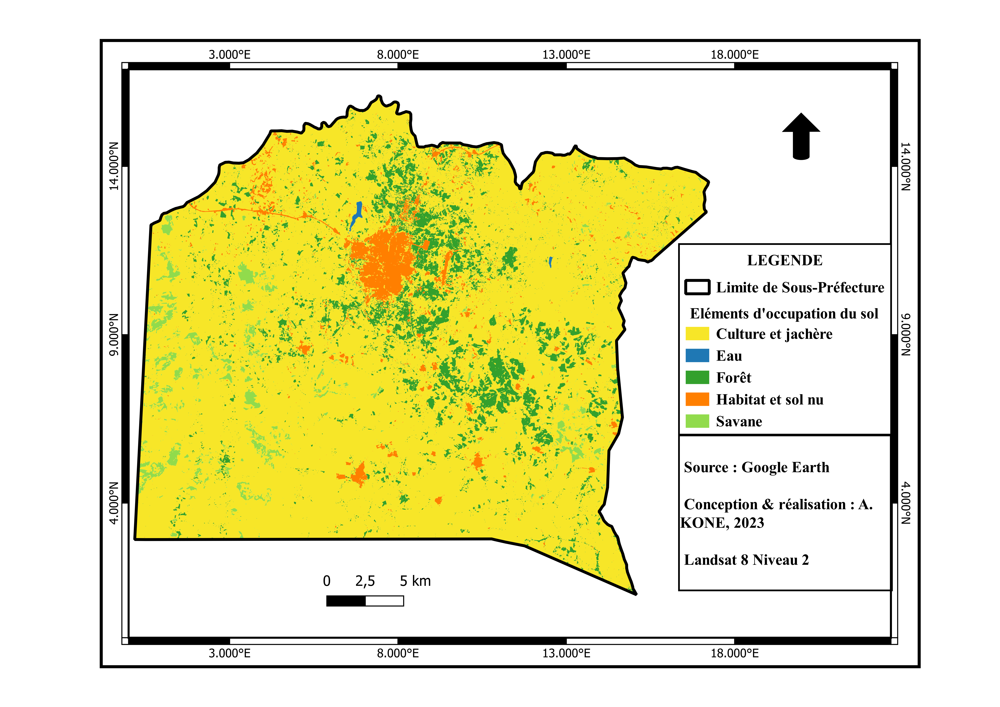
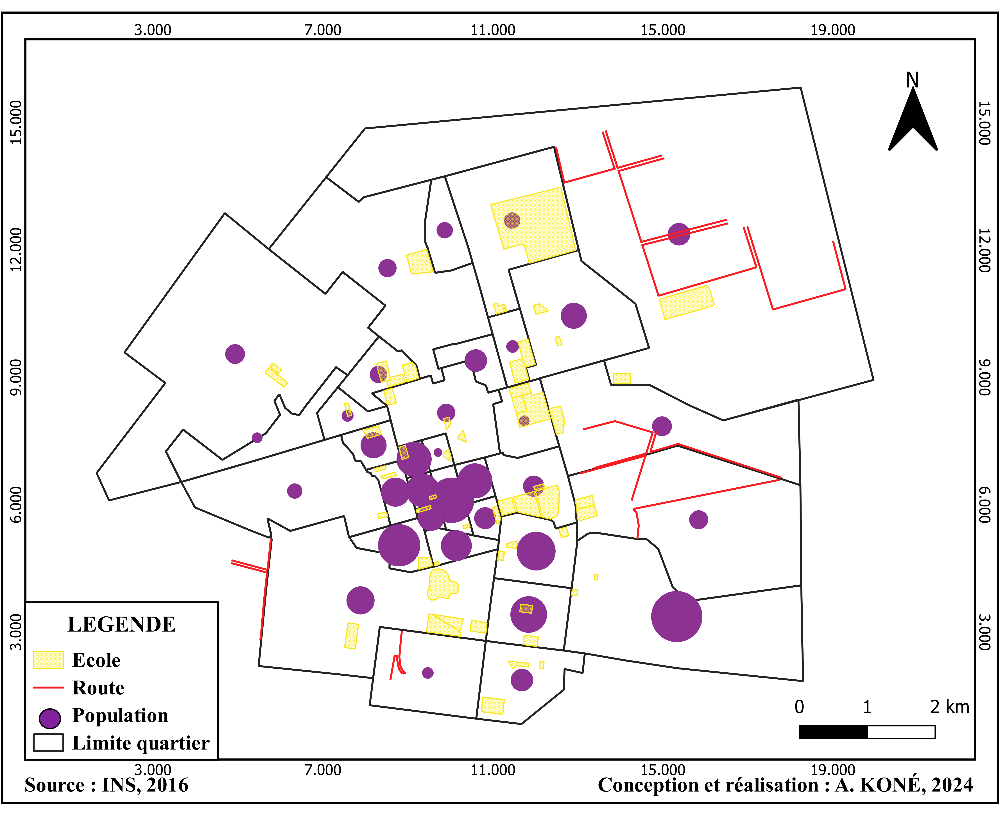


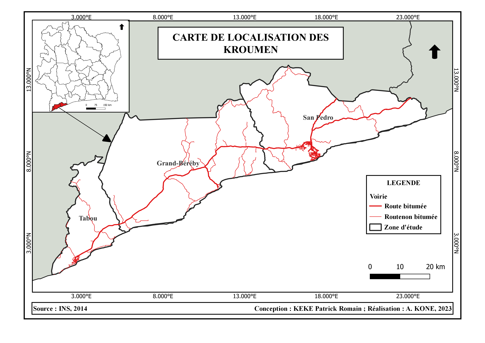


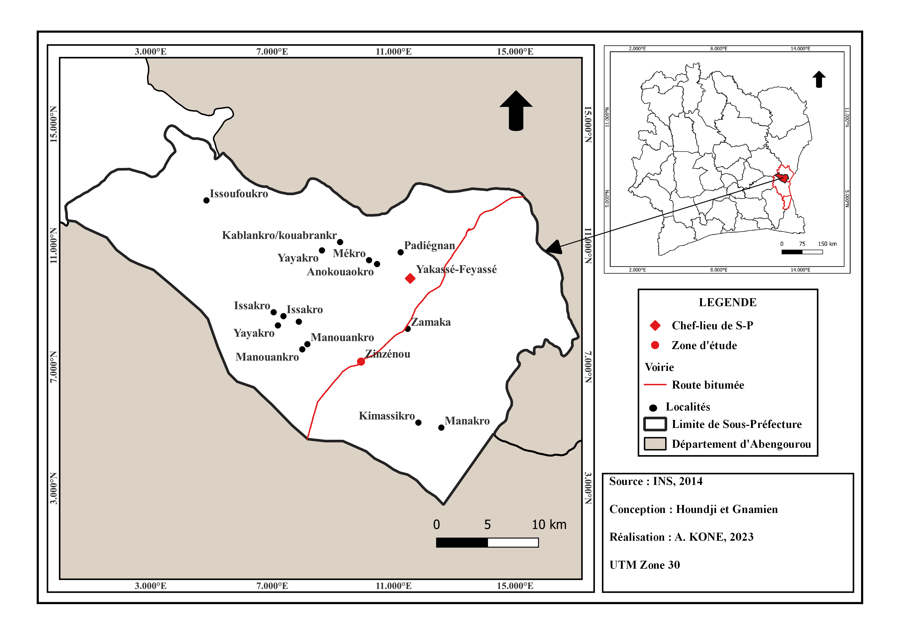
Contactez-moi
Je suis disponible immédiatement et mobile dans toute la Côte d'Ivoire. Prompt à la découverte de nouveaux horizons et défits, un esprit que j'aime.
Appelez moi
+225 07 67 52 52 63 | 01 40 18 15 74
Adresse
Mobilité Côte d'Ivoire